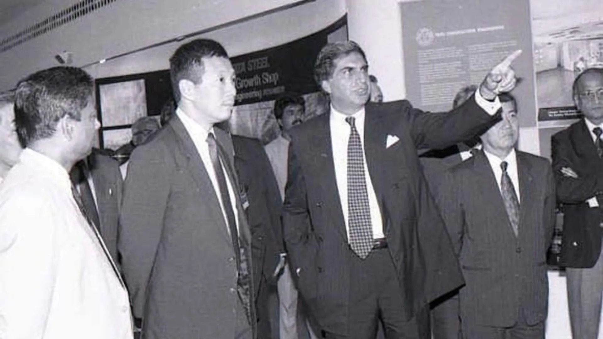
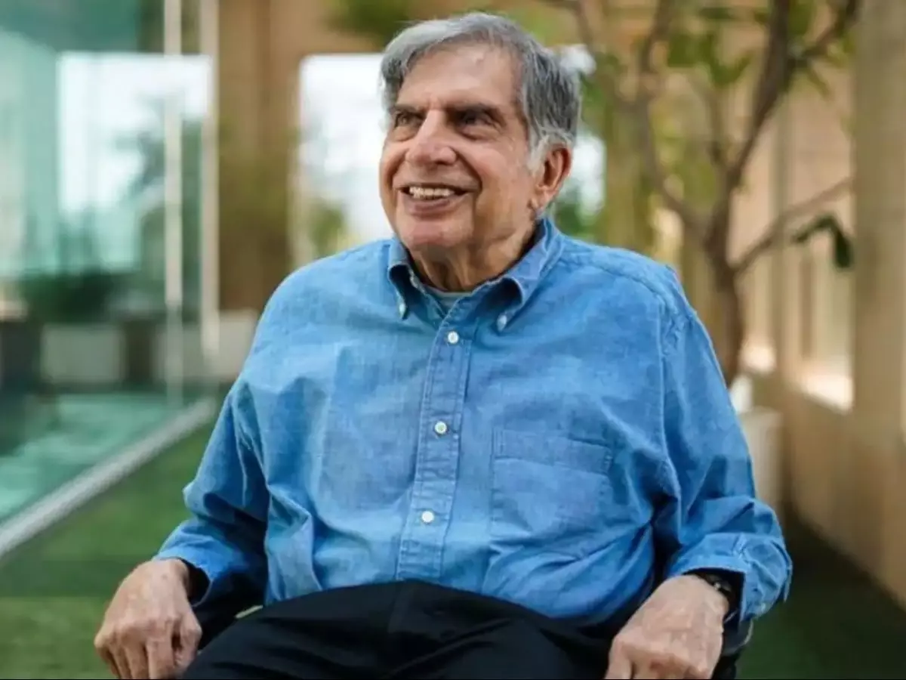

The Life of Ratan Tata
A journey of vision, leadership, and philanthropy
1937
Birth of a Visionary
Born on December 28 in Bombay (now Mumbai), India, to Naval and Sooni Tata.

1962
Education and Early Career
Graduated from Cornell University with a degree in Architecture and Structural Engineering. Joined Tata Group, working on the shop floor of Tata Steel.

1991
Rise to Leadership
Appointed Chairman of Tata Group, succeeding J.R.D. Tata. Began transforming the conglomerate into a global powerhouse.

2009
Launch of Tata Nano
Introduced the Tata Nano, the world's cheapest car, fulfilling his promise to provide affordable transportation to millions of Indians.

2012
Retirement and Beyond
Retired as Chairman of Tata Group, but continued to play an active role in philanthropy and mentoring startups.